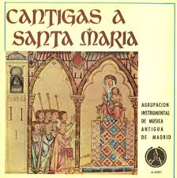

Luistervoorbeelden
Hieronder staan aan de linkerzijde van een aantal liederen luistervoorbeelden.
Aan de rechterzijde vindt je een illustratie, of de uitspraak van sommige liederen
door personen in hun moedertaal.
Hieronder staan aan de linkerzijde van een aantal liederen luistervoorbeelden. Aan de rechterzijde vindt je een illustratie, of de uitspraak van sommige liederen door personen in hun moedertaal.
Zang | Illustratie of Uitspraak |
|---|---|
| Een prachtige warme Jul, jul hier gezongen door het Zweedse mannenkoor Zero8 | |
| Közöntö hier; uitgevoerd door Debrecen Kodály Choir olv Péter Erdei | |
| Dana, dana - met dansje hier; uitgevoerd door Monteverdi Choir Hungary | |
| Dana dana -iets langzamer moet ook kunnen hier; door Musica Equinoctis | |
| Verrassende versie van Dana hier; met theater voor Hanneke | |
| O Joseph being an old man truly, oud engels lied; zetting door Richard Hall, uitgevoerd door Harper's Hamper | |
| Opuštĕný Moravisch lied, getoonzet door Dvorak hier; eveneens uitgevoerd door Jerusalem A-Cappella Singers | |
| Misto Klekání - eerste versie op Youtube hier; door Jerusalem A-Cappella Singers | |
| Misto Klekání - tweede versie op Youtube hier; Hal Leonard Choral - Adapted version by Anita Smisek | |
| Misto Klekání - derde versie op Youtube hier, Čtyři sbory; wat een plezier, en toch goed zingen. | |
| Ah Robin, gentle Robin (William Cornysh) - door Vox Luminis op Youtube: hier | |
| Todos los bienes del mundo - eerste versie op Youtube hier; La Capella Reial De Catalunya. Hespèrion XXI. Dirección: Jordi Savall. | |
| Todos los bienes del mundo - tweede versie op Youtube hier; Ars Musicae & Coro Alleluia | |
| Todos los bienes del mundo - derde versie op Youtube hier, lekker licht en vlot volgens Jules: Jordi Savall · Traditional · Hespèrion XXI · La Capella Reial de Catalunya | |
| Todos los bienes del mundo - vierde versie op Youtube: hier vlot en gevarieerd: Collegium Musicum Madrid | |
| Cantar del Alma - eerste versie door Camahort Quintet als mp3 bestand camahort.mp3 | |
| Cantar del Alma - tweede versie op Youtube hier; Carmen Bustamante begeleid door piano | |
| Cantar del Alma - derde versie op Youtube hier, groots uitgepakt, met chamadewerk uit het Spaanse orgel. | |
| Cantar del Alma - vierde versie als mp3: cantardelalma.mp3 uitgevoerd door Cor de Cambra de l'Auditori "Enric Granados" de Lleida, direcció Xavier Puig | |
| Cheruvimskaja pesn' (Tschaikowsky) [B107]: hier | |
| Japans wiegenlied Komoriuta: hier | |
| Dues Cantigas Del Rei Alfons X El Savi: mompou.mp3 (Cor de Cambra de l'Auditori Enrci Granados) |
 |
| Santa Maria strela (Contracanto): hier | |
| Santa Maria strela (Piano versie Mompou): hier | |
| Santa Maria strela (Coro Nostro Tempo): hier | |
| Santa Maria strela (Savall): hier | |
| Link K23 Kalanda Kastoriá: hier | K20 En stjerne klar: stjerne.mp3 |
| B104 Ukolebavka - eerste versie op Youtube - start na een ander lied op 2:22 minuten: hier; volgens Jules de beste tot nu, sfeervol en zeer Tsjechisch | |
| B104 - tweede versie op Youtube - hier start Ukolebavka na 14:50 minuten: hier, het erop volgende lied volgens Jules wel mooi maar veeleisend. | |
| B105 - Megruli Nana - ensemble Kolkheti (mannen): hier; nu nog mooie pakjes:-{ | |
| B105 - Megruli Nana - Sionna (vrouwen): hier | |
| B105 - Megruli Nana - ensemble Tamarisi (niet echt beter:-): hier | |
| K22 Mostan Kinyílt: mostan.mp3 | K19 Ninna nanna di Gesú Bambino: ninna.mp3 |
| Link K23 Kalanda Kastoriá: hier | K20 En stjerne klar: stjerne.mp3 |
| K24 Kalanda: kalanda.mp3 | K23 Kalanda Kastoriá: kastoria.mp3 |
| B101 Syrtos Rhodou: syrtos.mp3 | B100 Nyne van Archangelskij: nyne.mp3 |
| B102 Psintri Vasilitzia: psintri.mp3 | B99 Vecher, gesproken* kort (incl. mannen Kachayetsa): vecherkort.mp3 |
| B99 Vecher, gezongen door Voronez Kamerkoor: voronez.mp3 | B99 Vecher gesproken*, langzaam sopraan partij: vechersopraan.mp3 |
| S6 Brala Bih Kupusa: brala.mp3 | (*) Met dank aan Sergé Latychev voor zijn poëtische Russische klanken; moge die ons inspireren bij onze uitvoeringen. |
| B89 Cheruvimska pesen, zonder alleluija: cheruvimkort.mp3 | |
| B88 Okolo Hradisca, gezongen: okolo19.mp3 | B88 Okolo Hradisca, gesproken: okolo25.mp3 |
| B87 Skoj e vij flutrim, gezongen: shkojmixed.mp3 | B87 Skoj e vij flutrim, gesproken: shkoj.mp3 |
| B89 Cheruvimska pesen, langzaam met: cheruvimlang.mp3 | B96 Še dziedāju, gavilēju: sedziedaju.mp3 |